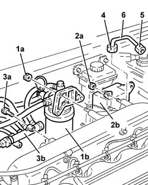
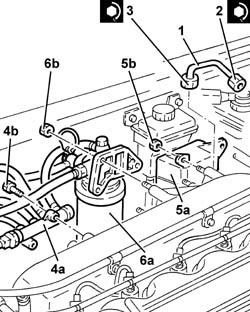
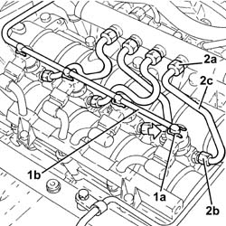
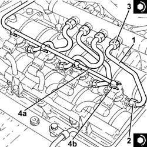

1060F36 lines to injectors - r r
- Path
- Procedures > 10 ENGINE > 1060 DIESEL FUEL INJECTION > 1060F injectors and lines > 1060F36 lines to injectors - r r
- Kind
- repair procedure (removal / refitting; the operation number is the code)
- Applies to
- engines: 1.9 JTD 8v , 1.9 JTD 16v, 2.4 JTD 10v, 2.4 JTD 20v; all production periods
- Interactive page
- https://sloeber94.github.io/elrnDB-a156/en/#/3237804
Applies to: engines: 1.9 JTD 8v , 2.4 JTD 10v; all production periods
 Removing
Removing
 Refitting
Refitting1. Undo nuts (1a) and move fuel filter assembly (1b) away from the intake manifold.
2. Undo nuts (2a) and move oil vapour separator (2b) away from the intake manifold.
3. Undo the bolts (3a) and move the fuel return manifold pipe (3b) aside.
4. Undo the manifold side connectors for the pipes from the fuel manifold to the injectors using a suitable spanner.
5. Undo the injector side connectors of the pipes leading from the fuel manifold to the injectors using a suitable spanner.
6. Remove all the pipes from the fuel manifold to the injectors.

Applies to: engines: 1.9 JTD 8v , 2.4 JTD 10v; all production periods
Refitting
Removing1. Fit new pipes from the fuel manifold to the injectors and secure them using the connectors without tightening them.
2. Undo the connectors for the pipes from the fuel manifold to the injectors, injector side, using a suitable spanner.
 | Fastening | Component | Ø | Value (daNm) |
|---|---|---|---|---|
2 | Connector | FUEL MANIFOLD LINE TO INJECTORS | M12 | (Injector side) 2.2 |
3. Tighten the connectors for the pipes between the fuel manifold and the injectors, manifold side to the recommended torque using a suitable spanner.
| Fastening | Component | Ø | Value (daNm) |
|---|---|---|---|---|
3 | Connector | FUEL MANIFOLD LINE TO INJECTORS | M14 | (Fuel manifold side) 2.2 |
4. Place the fuel return manifold pipe (4a) back in its housing and fix it using the bolts (4b).
5. Place the oil vapour separator (5a) back in its housing and fix it using the bolts (5b).
6. Place the fuel filter (6a) back in its housing and secure with the nuts. (6b)

Applies to: engines: 1.9 JTD 8v , 2.4 JTD 10v; all production periods
Applies to: engines: 1.9 JTD 16v; all production periods
Removing
RefittingProceed with removal 1016A10 sound-proofing cover - r + r
1. Push clips (1a) by hand and disconnect the pipe from the injectors to the fuel recovery manifold (1b), injectors side and move it aside.
2. Undo the connectors (2a), (2b) and remove the pipe from the fuel manifold to the injectors (2c).

Applies to: engines: 1.9 JTD 16v; all production periods
Refitting
Removing1. Fit the new pipes from the fuel manifold to the injectors and secure them using the connectors without tightening them.
2. Tighten the connectors for the pipes from the fuel manifold to the injectors, injector side, to the recommended torque using a suitable spanner.
| Fastening | Component | Ø | Value (daNm) |
|---|---|---|---|---|
2 | Connector | FUEL MANIFOLD LINE TO INJECTORS | M12 | (Injector side 22 24 |
3. Tighten the connectors for the pipes between the fuel manifold and the injectors, fuel manifold side, to the recommended torque using a suitable spanner.
| Fastening | Component | Ø | Value (daNm) |
|---|---|---|---|---|
3 | Connector | FUEL MANIFOLD LINE TO INJECTORS | M12 | Fuel manifold side 22 24 |
4. Connect the pipe from the injectors to the fuel recovery manifold (4a) to the injectors pushing it until the clips (4b) can be heard clicking into place.

Applies to: engines: 1.9 JTD 16v; all production periods
Proceed with refitting 1016A10 sound-proofing cover - r + r
Applies to: engines: 2.4 JTD 20v; all production periods
Proceed as described in 1060F34 lines to injectors - r r bearing in mind that you are working on all the pipes in question.